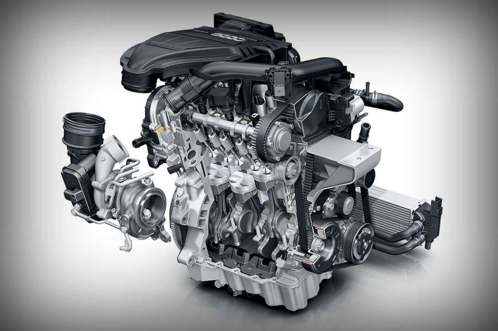
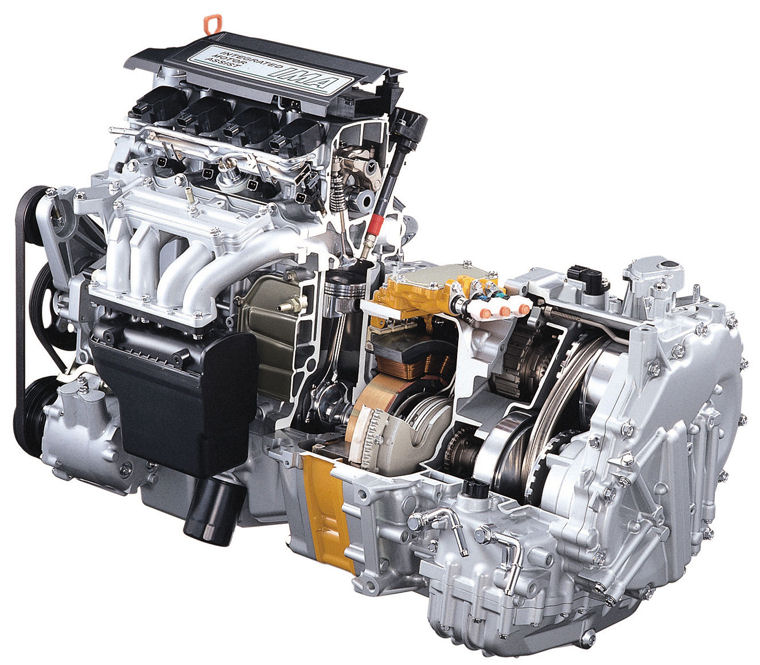
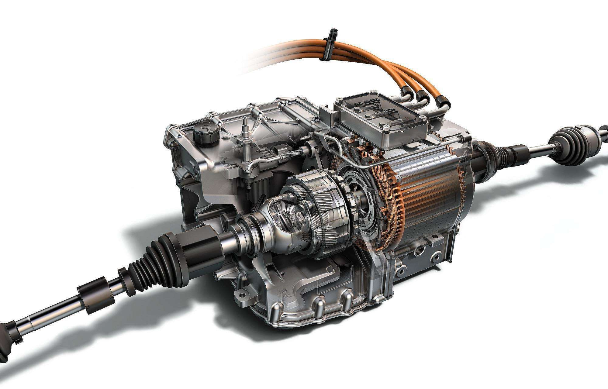

Автомобильные двигатели
Двигатель — это сердце автомобиля. Существует несколько типов двигателей, отличающихся принципом работы, топливом и характеристиками. Ниже представлены основные виды.
1. Бензиновые двигатели
Работают на бензине, используют искру для воспламенения топливно-воздушной смеси.
- Плюсы: Высокая мощность, плавная работа, доступность запчастей.
- Минусы: Больший расход топлива по сравнению с дизелем, меньший крутящий момент.
2. Дизельные двигатели

Используют дизельное топливо, воспламеняющееся от сжатия.
- Плюсы: Экономичность, высокий крутящий момент, долговечность.
- Минусы: Шумность, дорогое обслуживание, проблемы с запуском в мороз.
3. Гибридные двигатели
Сочетают ДВС (обычно бензиновый) и электродвигатель.
- Плюсы: Экономия топлива, экологичность, плавность хода.
- Минусы: Высокая стоимость, дорогой ремонт, вес батарей.
4. Электрические двигатели
Работают от аккумуляторов, не требуют топлива.
- Плюсы: Нулевые выбросы, тихая работа, высокий КПД.
- Минусы: Ограниченный запас хода, долгая зарядка, высокая цена.
Сравнение типов двигателей
| Тип | Топливо | Мощность | Экономичность | Экологичность |
|---|---|---|---|---|
| Бензиновый | Бензин (АИ-92/95/98) | Высокая | Средняя | Средняя |
| Дизельный | Дизель (ДТ) | Высокий крутящий момент | Высокая | Низкая (NOx, сажа) |
| Гибридный | Бензин + электричество | Зависит от конфигурации | Очень высокая | Высокая |
| Электрический | Электричество | Мгновенный крутящий момент | Наивысшая | Очень высокая |